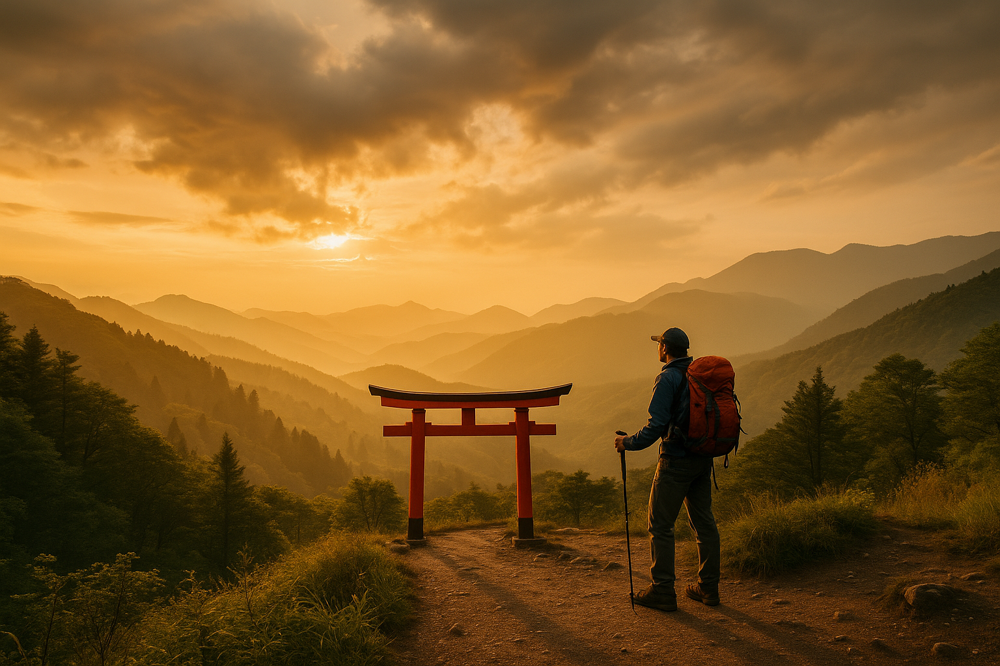

Le voyage qui est fait pour Vous !
Tokyo → Hakone → Kyoto → Nara → Osaka
Tokyo → Yokohama → Tokaïdo → Nagoya

Nature & Aventure 8 joursAlpes japonaises → Kanazawa → Takayama
Notre guide d'expériences uniques et authentiques au Japon
TAEJUN
originaire de Corée du Sud, installé à Nara depuis 25 ans
Je me souviens encore de mon premier matin à Tokyo : les gratte-ciels dorés par le lever du soleil, les câbles qui bourdonnaient au-dessus de ma tête, et juste au coin de la rue… un petit temple silencieux coincé entre deux immeubles futuristes.
C’est ce contraste qui m’a captivé : un pays où l’architecture raconte mille ans d’histoire, où la technologie se vit à chaque pas, et où chaque voyage devient une aventure.
Depuis ce jour, j’explore le Japon sans relâche : ses ruelles traditionnelles, ses laboratoires de robotique, ses sanctuaires perchés dans la montagne, ses musées d’art numérique, ses villages classés au patrimoine.
Aujourd’hui, j’ai décidé de rassembler tout cela ici :
Un guide vivant, qui mêle voyage, architecture et technologie, pour vous montrer le Japon tel que je le vois chaque jour.
Alors… bienvenue dans mon Japon !
Contactez-moi pour vos visites au Japon !Voyage au Japon
Questions fréquentes
Quel budget prévoir pour un voyage au Japon ?
Le budget dépend de la saison et du style de voyage, mais comptez entre 80€ et 150€ par jour et par personne (hors vol).
Quelle est la meilleure période pour partir ?
Le printemps (sakura) et l’automne (momiji) sont les périodes les plus agréables, avec une météo douce et de superbes paysages.
Peut-on se déplacer facilement en train au Japon ?
Oui, le réseau ferroviaire est très efficace. Le Japan Rail Pass permet de réduire fortement les coûts des longs trajets.